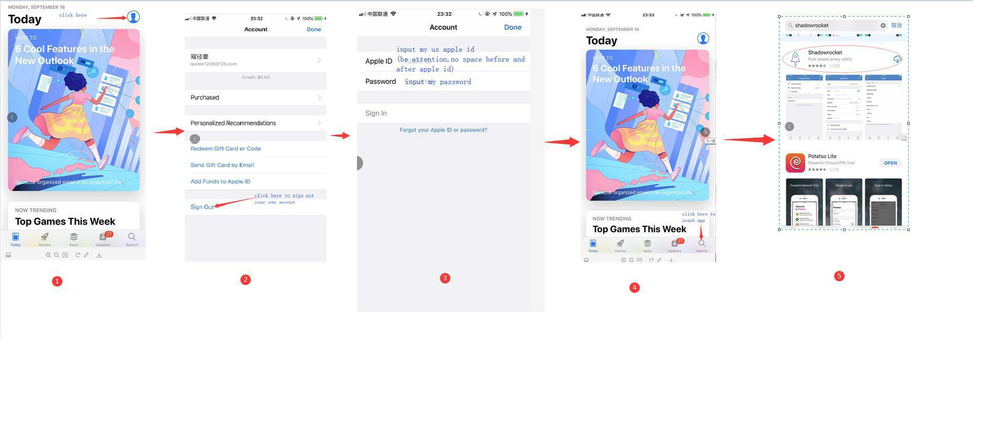
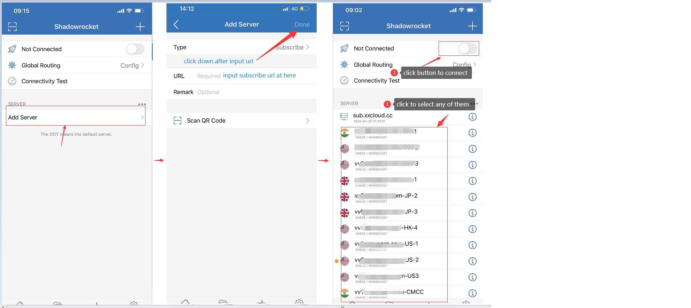

How to config for apple ios¶
a、download shadowrocket in appstore(you can use my id to download if you don’t want pay 2.99$)
Attentions:
1、Don’t login on icloud,just appstore
2、Don’t enable Two-factor authentication
b、how to change to apple id (you can ignore this step if you have shadowrocket already)
c、follow the picture below to set：
1、method of auto config (recommend)
click ‘+’ to add server，then choose type of subscribe,input subscribe url which send you ,then click done to finished setting,all of the server list,will auto config for you
2、method of manual config (you can try this method if you fail to setup use with auto config method)